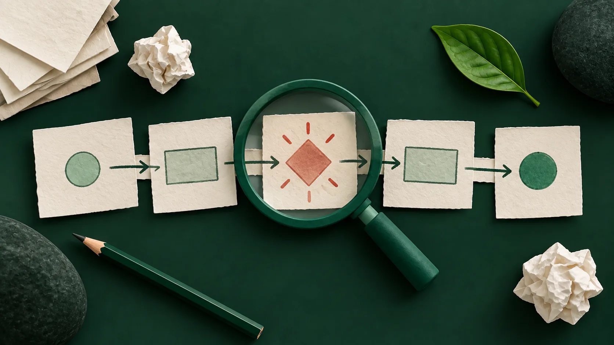
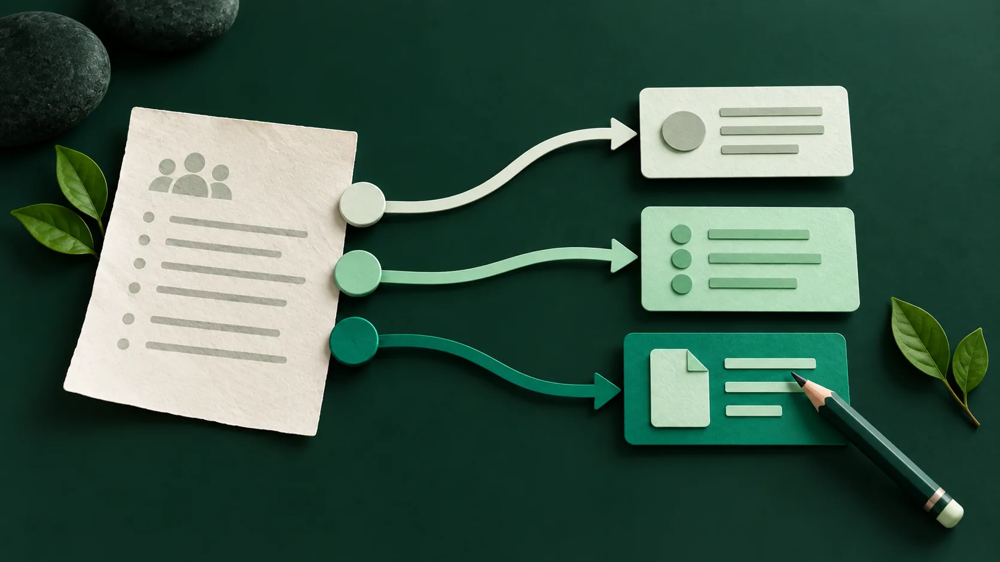

Independent
We recommend what fits your process, without reselling licences or earning commissions.
AI for real work
We study how your team works, find where AI can save time, and design the right solution. We choose the tools, set them up with you, and teach your team how to use them.
We recommend what fits your process, without reselling licences or earning commissions.
We design changes your team can use in their everyday work.
We stay until your team knows how to use the solution on its own.
01 / The starting point
New tools appear every week. The useful question is which processes are worth improving, how to bring AI into daily work, and how to help the team adopt it.

02 / What we do
We start with people and their tasks. The tool comes later.
We talk to the team and identify repetitive tasks, manual work, and time-consuming steps.
We weigh impact, cost, ease of adoption, and risk. Not every process needs AI.
We define the new workflow, choose tools, set them up, and test real cases.
03 / How we work
A clear path until your team can carry on independently.
We speak with your team and understand how work happens today.
We prioritise opportunities and choose the right tools.
We configure, test, and refine the solution with real cases.
We train the team, document the workflow, and hand it over.
04 / One example

A salesperson summarises notes, updates the CRM, and prepares the follow-up email separately.
Notes become a summary, next steps, and a follow-up draft. The salesperson reviews and sends it.
Our advantage
We follow and test AI tools to find those that fit each process. We consider ease of use, cost, privacy, and adoption before recommending anything.
THE APPS GARDEN / AI
We start with a specific workflow and look for a simpler way to handle it.
An initial conversation with no obligation.